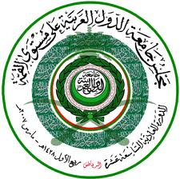

الجديد

يحكى ان......
22/11/2010
مكافحة الارهاب استراتيجية امن دولة وليس مهمة امنية
بعد المقال التي كتبته عن التطور وتوفير عناصر القوة لامتنا واولها القوة العسكرية شرح لي احد الاصدقاء كيف اننا اضعف اليوم من ان نستطيع ان نتصرف باستقلالية في تطوير ابحاثنا العسكرية لتحقيق العزة والمنعة لامتنا. حاججني كيف يمكن ان تسمح لنا دول عظمى ان نصبح اصحاب قوة وبالتالي اصحاب قرار مستقل. استدل على ذلك بالخطى المتسارعة والمكشوفة للسياسة الامريكية اليوم عما كانت عليه بالامس وان كانت استراتيجيتهم واحدة لا تختلف وانما اختلف فيها وجه العملة المصكوكة حديثا. بالرغم من نقاشي لاقناعه في الموضوع الا انني شعرت ان لديه قناعة ثابتة واستسلام تام باننا لا حول لنا ولا قوة، بل ولا رأي. وفي اخر المطاف قال ياأخي "جبان عايش ولا شجاع ميت". نسيت في لحظتها ماسبق وان قلته في مقال سابق. نسيت الاية القرانية التي تعلمنا كيف نستدل بها على طريقنا، وهذا في الواقع مشكلتنا اننا ننسى الموضوع المناسب في الوقت المناسب. نسيت قول الله عز وجل "ولكم في رسول الله اسوة حسنة" وذكرني بها اخي في الله د.طارق سويدان. استمعت الى محاضرة تلفزيونية ل د.طارق عن تطور تاريخ الامة الاسلامية. عند هجرة الرسول عليه الصلاة والسلام لم يكن للمسلمين حتى مدينة واحدة يمتلكون زمام امرهم فيها وبعد 35 عاما من الهجرة كانت الدولة الاسلامية اعظم دولة في عصرها. ليس ذلك فحسب بل اسقطت اعظم دولتين في مرحلة نموها وتطورها السريع وهما دولتي الفرس والروم. فهل هذا مستحيل اليوم؟ لا اقصد تدمير الاخرين ولكن اعني تطوير امتنا لتحقيق عزتها ومنعتها واستقلاليتها. لا اعتقد ان ذلك بالامر المستحيل ولكن نحتاج الى ان نعرف المقومات الحقيقية لتحقيقة. اولا ان يكون لنا هدف سامي تتبناه القيادة وتسعى جادة لتحقيقة. وثانيا ان تتبنى الامة نفس الهدف الذي تبنته القيادة ايمانا واقتناعا. وثالثا ان تلتف الامة حول القيادة وتعمل جادة وبعناية مع توجيهات هذه القيادة فلا تحدث اي انكسارات وتراخيات لمسيرة التقدم للامة الجادة. العمل الجماعي والتكاتف قوة حقيقية بذاتها لا يمكن هزيمتها. كان يحكي لي جدي هذه القصة دائما فيقول: يحكى ان رجلا صالحا عندما كان يحتضر دعى ابناءه واعطاهم حزمة من العصي المربوطة وطلب منهم كسرها. حاول الابناء كسر العصي ففشلوا الا واحد منهم وهو اصغرهم. فك هذا الابن العصي من بعضها البعض واخذ في تكسيرها واحدة تلو الاخرى. فقال ابوهم: "مثلكم مثل هذه العصي هكذا منعتكم، وكذلك تهزمون". وفي الوقع هكذا غلبتنا امريكا وبريطانيا واسرائيل. اوليس الحل بيدنا ونستطيعه؟ الا اننا لا نريده...فتعسا لنا.